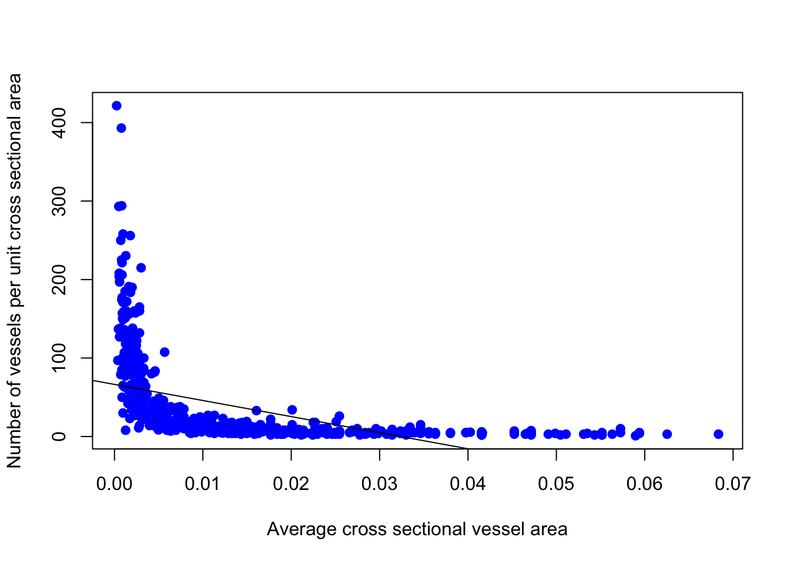

3 The Guide
To start solving this assignments what we want to do first is to load the data given
data1 <- read.csv(file = "_B2010 2_Walk through Woods_DATASET and VALUES_POST.csv")
data1[0:5,0:9]## ï..Family Binomial A..mm.2. N..mm..2. F..mm.2.mm.2.
## 1 Rhamnaceae Krugiodendron ferreum 0.002922467 45 0.13151099
## 2 Fabaceae Tamarindus indica 0.010386891 9 0.09348202
## 3 Anacardiaceae Astronium urundeuva 0.009503318 15 0.14254977
## 4 Fabaceae Dalbergia melanoxylon 0.013273229 7 0.09291260
## 5 Fabaceae Swartzia corrugata 0.018385386 4 0.07354154
## logA..mm.2. logN..mm..2. logF..mm.2.mm.2. D..g.cm.3.
## 1 -2.534250 1.6532125 -0.8810379 1.35
## 2 -1.983514 0.9542425 -1.0292719 1.28
## 3 -2.022125 1.1760913 -0.8460335 1.21
## 4 -1.877023 0.8450980 -1.0319254 1.20
## 5 -1.735527 0.6020600 -1.1334673 1.20With this data we can make a plot to show correlation between the Average cross sectional vessel area and the number of vessels in the following way:
plot(data1$N..mm..2.~data1$A..mm.2., pch = 19, xlab = "Average cross sectional vessel area", ylab = "Number of vessels per unit cross sectional area", col="blue")And also we can look at the relation between Wood density and Average of absolute value of latitude
plot(data1$AbsLat..Degrees.~data1$D..g.cm.3., pch = 19, xlab = "Wood density", ylab = "Average of absolute value of latitude", col = 'black')To analyze the relation between variables we can use the cor(x,y,method = "pearson") function. And it will give us a numeric description of the data’s relation (for more information about this topic:)
3.1 Sample with t.test
Structural adaptation: Average cross sectional vessel area
Categories:
- Tall(Average plant height is greater than 3 meters)
cat1 <-data1[0:10,0:3]
cat1## ï..Family Binomial A..mm.2.
## 1 Rhamnaceae Krugiodendron ferreum 0.002922467
## 2 Fabaceae Tamarindus indica 0.010386891
## 3 Anacardiaceae Astronium urundeuva 0.009503318
## 4 Fabaceae Dalbergia melanoxylon 0.013273229
## 5 Fabaceae Swartzia corrugata 0.018385386
## 6 Fabaceae Caesalpinia paraguariensis 0.003848451
## 7 Fabaceae Dinizia excelsa 0.025446900
## 8 Boraginaceae Patagonula americana 0.004133158
## 9 Bignoniaceae Tabebuia chrysantha 0.002281189
## 10 Fabaceae Bocoa prouacensis 0.018385386- Short(Average plant height is less than 3 meters)
cat2 <- data1[11:20,0:3]
cat2## ï..Family Binomial A..mm.2.
## 11 Euphorbiaceae Gymnanthes lucida 0.000855299
## 12 Fabaceae Dipteryx odorata 0.024052819
## 13 Bignoniaceae Tabebuia serratifolia 0.004964109
## 14 Erythroxylaceae Erythroxylum pulchrum 0.001590431
## 15 Fabaceae Pterocarpus santalinus 0.041547563
## 16 Sapotaceae Manilkara bidentata 0.009852035
## 17 Fabaceae Acacia erioloba 0.015174678
## 18 Sapindaceae Dodonaea viscosa 0.002457511
## 19 Rhizophoraceae Rhizophora mangle 0.003033290
## 20 Fabaceae Zollernia paraensis 0.006939778Means and standard deviations of both group of data:
mean1 <- mean(cat1[,3])
mean2 <- mean(cat2[,3])
sd1 <- sd(cat1[,3])
sd2 <- sd(cat2[,3])
mean1## [1] 0.01085664mean2## [1] 0.01104675sd1## [1] 0.00792283sd2## [1] 0.01292314barplot(c(mean1,mean2), names.arg = c('cat1','cat2'),main ="Average of groups", ylim = c(0,0.0125), col = c('blue','blue'))
For the t.test evaluation:
t.test(cat1[,3], cat2[,3], alternative = 'two.sided',paired = TRUE)##
## Paired t-test
##
## data: cat1[, 3] and cat2[, 3]
## t = -0.052951, df = 9, p-value = 0.9589
## alternative hypothesis: true difference in means is not equal to 0
## 95 percent confidence interval:
## -0.008312154 0.007931926
## sample estimates:
## mean of the differences
## -0.0001901138